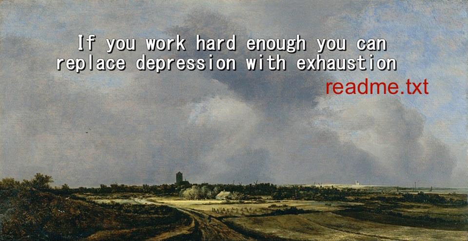

+------------------+
| mikeyzhong.com |
+------------------+
Originally posted on Facebook on 10 Nov 2016

This "motto" is tongue-in-cheek -- depression is a real issue, one very close and dear to my heart.
I was clinically depressed, from April until very recently. Intellectual insecurity, uneasiness over my own sexual orientation, breaking up with my partner at the time because of such, issues with my parents. There would be days in which, for hours on end, I was unable to climb out of bed to start my day. I am more than happy to talk about my experiences dealing with it, getting out of the ditch, the lessons I learned through the struggle. (I'm elated to announce: I had my absolute last psychotherapy session just yesterday!) Please hit me up if you’re interested to hear more.
It sucks that depression is a largely invisible issue, largely because it is so terribly taboo to talk about it. I want to change that. If you feel like negative thoughts hinder your day-to-day functioning, I am more than happy to lend an ear. Feel free to shoot me a message about it.